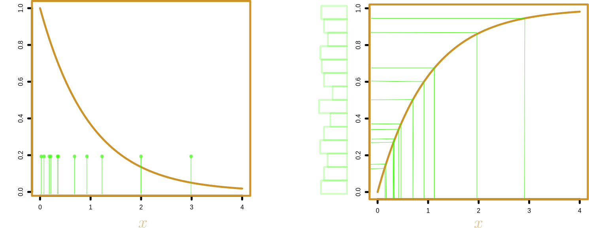
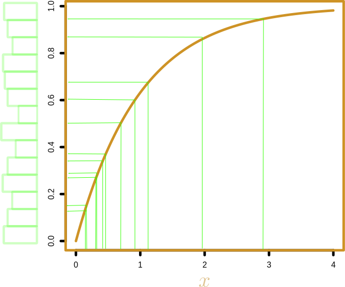
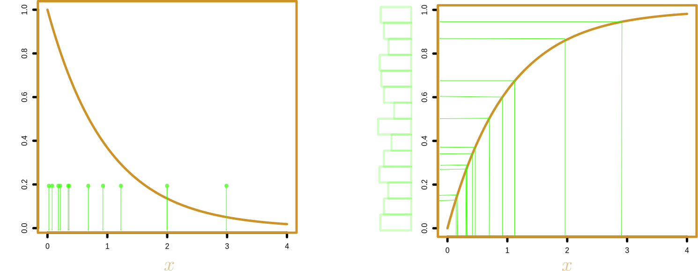
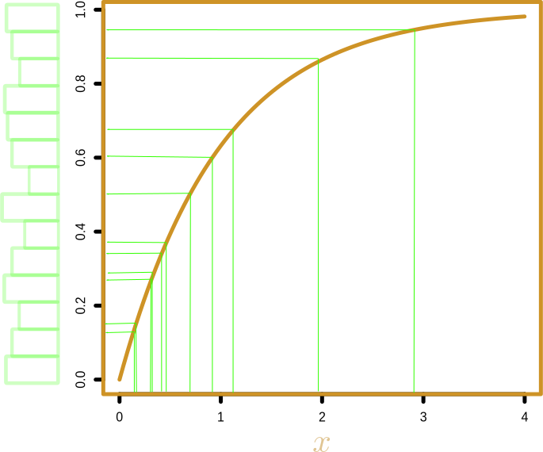

Densité de probabilité: $f(x)dx \simeq \Pr(x \in \mathrm{d}x)$

Probabilité cumulée: $F(x) = \int_0^x f(u) \mathrm{d}u$
Echantillonnage inverse
 




Algorithme Monte-Carlo "accept/reject"
$\pi(x)=\frac{1}{2}(x-1)$, $1\leq x\leq 3$
Algorithme Monte-Carlo "accept/reject"
$\pi(x)=\frac{1}{2}(x-1)$, $1\leq x\leq 3$
numobs = 1000
obs = rep(NA, numobs)
count = 1
while (count <= numobs)
{
# Valeur en x ~U[1,3]
x.val = 1 + (3 - 1)*runif(1);
# Valeur en y ~U[0,1]
y.val = runif(1);
# Densité de probabilité
pi.x = 0.5*(x.val - 1);
if (y.val < pi.x) # y.val < pi.x -> valide!
{
echantillon[count] = x.val
count = count + 1
}
# end if
}
# end while
Chaînes de Markov par Monte Carlo
- Trouver les probabilités de transition telles que la fraction du temps passé par la chaine dans $x_1$, $x_2$ ou $x_3$ soit proportionelle à la probabilité cible de l'état correspondant.
- Solution: choisir $p(\cdot|\cdot)$ tel que $$p(x_i|x_j) \pi(x_j) = p(x_j|x_i) \pi(x_i),$$ où $\pi(\cdot)$ est la distribution cible.
Algorithme Métropolis
Algorithme Métropolis-Hastings
Algorithme Métropolis-Hastings
chain.len = 1E+6;
echantillon = rep(NA,chain.len)
count = 1
pi = c(1/2,1/4,1/4)
idx.cur = 1
while (count <= chain.len)
{
# Propose une nouvelle valeur de x
idx.prop = sample(1:3,size=1);
# Ratio de Metropolis-Hastings
mh.ratio = pi[idx.prop]/pi[idx.cur];
# Accepte nouvel état avec proba min(1,mh.ratio)
if (!(runif(1) < mh.ratio))
{
echantillon[count] = idx.prop
idx.cur = idx.prop
}
else # Rejet
{
echantillon[count] = idx.cur
}
# end if
count = count+1;
}
# end while
Métropolis-Hastings & inférence Bayésienne
- $d$: taille des élèves de 6ème dans le collège X
- $\theta$: moyenne+variance
- Modèle: loi normale pour la vraisemblance, uniforme pour le prior
Métropolis-Hastings & inférence Bayésienne
Limites de Métropolis-Hastings
Limites de Métropolis-Hastings
Metropolis(-Hastings) ne s'en accommode pas :( \begin{eqnarray}p(\theta'|\theta) = \min\left(1,\frac{\pi(\theta',d)}{\pi(\theta,d)}\right) =\min\left(1,\frac{h(d;\theta') \times \mathcal{Z}_B(\theta) \times \text{prior}(\theta')}{h(d;\theta) \times \mathcal{Z}_B(\theta') \times \text{prior}(\theta)}\right) \end{eqnarray}
Metropolis(-Hastings) ne s'en accommode pas :( \begin{eqnarray}p(\theta'|\theta) = \min\left(1,\frac{\pi(\theta',d)}{\pi(\theta,d)}\right) =\min\left(1,\frac{\text{vraisemblance}(d|\theta') \times \text{prior}(\theta')}{\text{vraisemblance}(d|\theta) \times \text{prior}(\theta)}\right) \end{eqnarray}
Algorithme d'échange
- Proposé en 2012 par Iain Murray, Zoubin Ghahramani, David J. C. MacKay.
- Idée maîtresse: introduction d'une variable auxilliaire $e$ de structure similaire à celle des données réelles $d$.
- $e$ est échantillonné dans $h(e;\theta')/\mathcal{Z}_B(\theta')$
- Probabilité de transition $\theta \rightarrow \theta'$:
\begin{eqnarray}p(\theta'|\theta) = \min\left(1,\frac{\pi(\theta',d,\theta,e)}{\pi(\theta,d,\theta',e)}\right) =\min\left(1,\frac{h(d;\theta') h(e;\theta) \mathcal{Z}_B(\theta) \mathcal{Z}_B(\theta') \text{prior}(\theta')}{h(d;\theta) h(e;\theta') \mathcal{Z}_B(\theta') \mathcal{Z}_B(\theta) \text{prior}(\theta)}\right) \end{eqnarray}
\begin{eqnarray}p(\theta'|\theta) = \min\left(1,\frac{\pi(\theta',d,\theta,e)}{\pi(\theta,d,\theta',e)}\right) =\min\left(1,\frac{h(d;\theta') \times h(e;\theta) \times \text{prior}(\theta')}{h(d;\theta) \times h(e;\theta') \times \text{prior}(\theta)}\right) \end{eqnarray}
Applications à la phylogéographie


- "Détection": les séquences sont collectées avec une intensité proportionnelle (ou égale) à la densité générée par le processus évolutif
Applications à la phylogéographie
- "Détection": les séquences sont collectées avec une intensité proportionnelle (ou égale) à la densité générée par le processus évolutif

Applications à la phylogéographie
- "Enquête": les séquences sont collectées préférentiellement au sein des régions les plus facilement accessibles
- Localisations aux feuilles de l'arbres sont observées conditionnellement aux regions échantillonnées $\rightarrow$ mouvement Brownien tronqué $\rightarrow$ algorithme d'échange